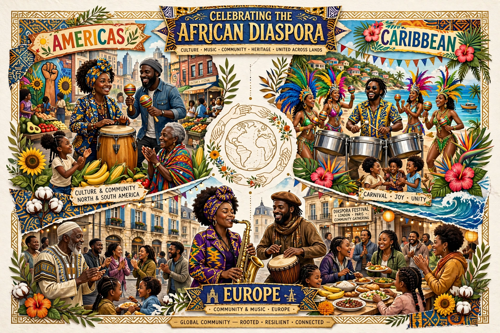

The African diaspora is the worldwide population descended from native sub-Saharan Africans, formed principally through the forced migration of the transatlantic, trans-Saharan and Indian Ocean slave trades, and more recent voluntary migration. Large populations live in Brazil, the United States, the Caribbean, and elsewhere in the Americas and Europe.

The transatlantic slave trade — see Triangular trade — dispersed millions from the 1500s to the 1800s. Enslaved communities preserved and transformed African languages, religions, music and foodways, creating cultures such as African American, Afro-Brazilian, Afro-Cuban and Garifuna cultures.
Diasporic movements include Pan-Africanism, the Harlem Renaissance, Rastafari, and the civil rights movement. Scholars such as Paul Gilroy described a "Black Atlantic" of shared, hybrid culture. The African Union recognises the diaspora as its "sixth region".
Post-1960s immigration from Nigeria, Ghana, Ethiopia, Somalia and elsewhere has reshaped cities in North America and Europe, while debates over identity, reparations and return continue.